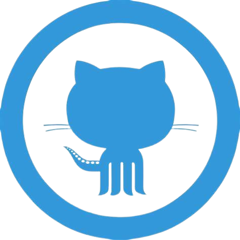
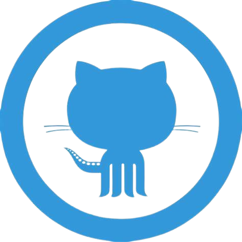

Formação
uniasselvia 2024-2026
analise e desenvolvimento de Sistemas
Olá, me chamo Fernando, sou estudante de Analise e Desenvolvimento de Sistemas, aqui estou em busca de uma primeira oportunidade, no mercado de ti
tenho conhecimentos em HTML CSS, Java Script, Mysql e PHP
O HTML uma linguagem de marcação, que é usada para criar as estruturas do site com uma forma organizada, e semântica.

O CSS é usado para deixar o site, muito mais bonito, com estilos de fontes, cores sombras e muito mais.
O java Script que diferente do HTML e CSS, ele já é uma linguagem de programação, é usada para ter mais interatividade, entre o site, e o usuario final.
uniasselvia 2024-2026
analise e desenvolvimento de Sistemas
curso em video 2023-atualmente
html / css / java script / php / mysql / guit / guithub

Um projeto de loja para compra de passagens aeréa

Um projeto de uma loja de venda de jogos de ps5

Um projeto de uma lanchonete
Meu curriculo e redes sociais disponiveis a baixo.

 



Ⓒ 2024 Fernando Stofeles, todos direitos reservados.